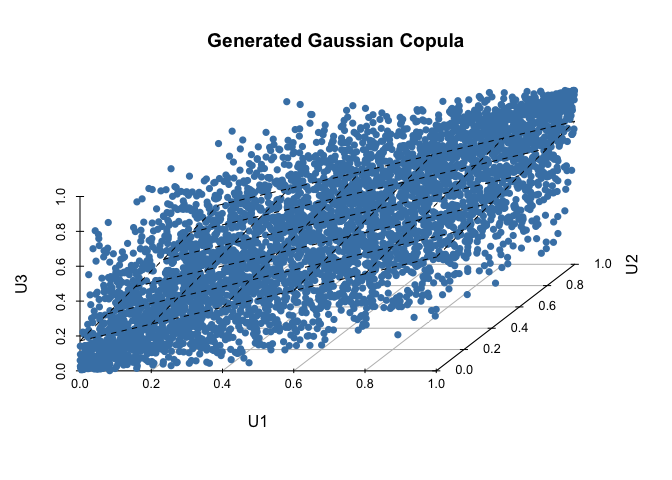
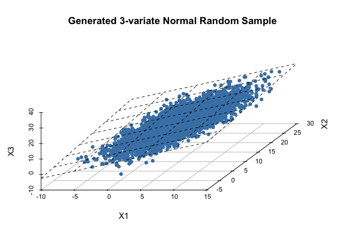
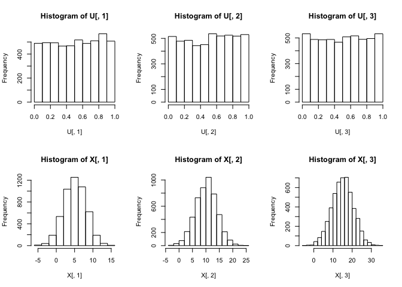
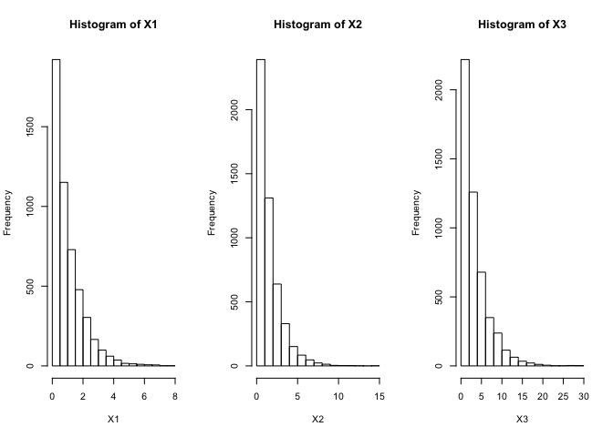

What is Copula?
코퓰러(Copula)는 무엇인가?
Concept
분명 통계전산 수업 때 얼핏들었지만 기억이 가물가물해져 다시 복습(사실 거의 처음)하는 마음으로 코퓰러의 개념과 이에 대한 간단한 시뮬레이션을 공부해보았다.
코퓰러란 간단히 말을 하자면 random variable들 간의 상관관계 혹은 종속성을 나타내는 함수이다.
우리가 random variable들 간의 종속 구조를 설명하고 싶을때, 혹은 그러한 구조를 갖고 있는 다변량확률변수들을 표현하고 싶을 때 우리는 copula를 활용해볼 수 있다.
다변량확률변수를 다루면서 우리는 이를 이루고 있는 각각의 marginal random variable만으로는 전체 다변량확률변수를 100% 설명할 수 없다.
위와 같은 bivariate random variable의 모양을 생각해보자.
우리는 Lienar Operater \(\mathbf{A}= [I_m\ 0]\) (\(in\ this\ case,\ m=2\))를 이용하여 간단한 증명을 통해 Marginal randomvariable \(X_1\)이 $X_1 \sim N_1(\mu_1,\sum_{11}) $의 분포를 따르는 것을 확인 할 수 있지만, 이러한 marginal 분포 \(X_1\)과 \(X_2\)로는 전체 이변량정규확률변수를 설명하지 못한다.
\(X_1\)과 \(X_2\)간의 상관관계에 대한 정보가 있을 때 우리는 전체 확률변수에 대해 설명할 수 있는데, 이러한 여러개의 변수간(여기서는 \(X_1\), \(X_2\) 두개)의 종속관계에 대한 정보를 제공해주는 것이 Copula이다.
continuous random variable과 그것의 cdf 또한 연속인인 \(X\)를 생각해볼 때, 우리는 이것의 cdf \(F(X)\)의 분포가 \([0,1]\)을 범위로 갖는 Uniform Distribution이라는 것을 알 수 있다.
간단히 확인해보자면, 위에서 설명한 확률변수의 누적확률분포를 \(F(X)\)라고 칭하자.
그렇다면 \(0<x<1\)을 만족하는 임의의 \(x\)에 대하여 아래와 같은 식전개가 가능하다.
$\(P(F(X) \leq x)\)$
$\(=P(X \leq F^{-1}(x))\)$
$\(=F(F^{-1}(x))\)$
$\(=x\)$
고로 \(F(X)\)의 pdf는 \(x\)인 Uniform Distribution이다.
두 확률변수 \(X\)와 \(Y\)에 대하여 \(F_1\)과 \(F_2\)를 각각의 누적분포함수라 하고 \(F\)를 두 확률변수의 joint cdf라고 한다면 앞에서 설명한 것과 같이 \(F_1\)과 \(F_2\)는 각각 \([0,1]\)에서의 Uniform 분포가 된다.
또한 Copula란 여기의 두 확률변수 \(X\)와 \(Y\)에 대한 \(F_1(X)\), \(F_2(X)\)의 joint cdf로 정의한다. 즉 이변량확률변수에 한해서는 Copula는 \([0,1]^2 \rightarrow [0,1]\)로 가는 함수 이며 아래와 같이 표현할 수 있다.
여기서 marginal cdf \(F_i\)가 marginal distribution에 대한 모든 정보를 갖고 있다면, copula C는 이 둘 간의 종속 구조 혹은 상관관계에 대한 모든 정보를 갖고 있다고 말할 수 있다.
이러한 copula가 유용한 이유는 직관적으로 생각해봐도 우리가 R이나 다른 여러 프로그램을 이용해 simulation을 하면서 종속관계를 유지하는 확률변수들을 생성하고 싶을 때 아주 유용하다.
우리는 흔히 특정한 분포를 갖고 이 분포에서 나오는 독립적인 난수들은 쉽게 생성할 수 있지만, 종속관계를 유지하는 변수들을 뽑아내기란 쉽지않은데, 이를 도와주는 것이 Copula이다.
Simulation and check Copula
수리통계학(1)의 3장 내용을 복기해본다면 우리는 확률변수 \(X\)에 대해서 아래와 같은 성질을 떠올려볼 수 있다.
여기서 확률변수 \(X\)를 표준정규분포에서 나온 \(Z \sim N(0,1)\)로 정의를 하면 우리는 여기서 얻는 Copula는 Gaussian Copula가 된다.
그렇다면 이때의 공분산행렬은 \(\mathbf{AA^{'}}\)가 되며 이를 편의상 \(\mathbf{\sum}\)이라 표현하겠다.
간단하게 생각해보면 Gaussian Copula를 이용한 샘플링은, 표준정규확률변수 \(Z\)의 선형결합식에서 우리는 특정한 종속구조를 갖고 있는 scaling된 공분산행렬(항상 scaling되지는 않으며, 계산의 편의상 공분산행렬의 분산과 공분산 원소를 scaling해서 계산함.)을 이용하여 서로 종속구조를 띄고 있는 새로운 확률변수를 생성하는 원리이다.
예를 들어 아래와 같은 형태를 띄는 이변량확률변수를 만들고 싶어한다고 가정해보자.
우리는 Choleski Decomposition을 통해서 \(\mathbf{AA^{'}}=\mathbf{\sum}\)를 만족하는 \(\mathbf{A}\)를 얻을 수 있다.
set.seed(2013122059)
cov_matrix <- matrix(c(1,0.7,0.7,1),2,2)
Z1 <- rnorm(5000,0,1)
Z2 <- rnorm(5000,0,1)
A <- chol(cov_matrix)
#Generate bivariate random variable X
X <- t(A)%*%rbind(Z1,Z2)
X_t <- t(X)
colnames(X_t) <- c('X1','X2')
head(X_t)
## X1 X2
## [1,] 0.171640092 -0.18734343
## [2,] -0.004784986 0.06963441
## [3,] 0.002310486 -0.24824690
## [4,] 0.056441096 0.31423495
## [5,] -1.495328424 -0.22135001
## [6,] 1.701277385 1.19219915
cor(X_t)
## X1 X2
## X1 1.0000000 0.6805573
## X2 0.6805573 1.0000000
표준정규확률변수를 random하게 충분히 많이 뽑고 이를 Choleski Decomposition을 통해 새롭게 서로 종속구조를 갖는 bivariate normal random sample \(X\)를 만들어보았다.
마지막에 확인할 수 있듯이 이때의 correlation matrix를 그려보면 \(\begin{bmatrix} 1 & 0.7 \\ 0.7 & 1 \end{bmatrix}\)과 매우 유사하게 나옴을 확인할 수 있다. (여기서는 처음부터 표준정규확률변수를 통해 covariance matrix를 scaling했기 때문에 공분산행렬과 상관계수행렬은 sample size가 커질수록 한쪽으로 근사한다.)
다시 정리를 해본다면, Gaussian Copula를 통해 bivariate normal random sample을 만드는 것은 아래와 같은 단계를 거친다고 할 수 있다.
-
Generate \(Z_1, Z_2, ..., Z_{n} \sim indep\ N(0,1)\)
-
\(\mathbf{Y}=\mathbf{A}\mathbf{Z},\ (\mathbf{Y} \sim N(\mu,\mathbf{\sum})),\ Choleski\ decomposition\ \mathbf{\sum}=\mathbf{A}\mathbf{A^{'}}\)
-
\(Compute\ {\phi}(W_{i}),\ i=1,..,n\)
-
Set \(X_{i}= {F_{i}^{-1}}(\phi(W_{i}))\)
이는 위에서 간단하게 시뮬레이션을 통해 확인했던 방법과는 약간 다른 방법이다.
위에서는 미리 공분산행렬을 스케일링한 후에 촐레스키 분해를 통해 종속구조를 갖는 이변량확률변수 \(X_{i}\)를 만들었지만, 앞에서 소개한 방식은 cdf의 분포는 Uniform 분포를 갖는다는 점을 착안하여 상관관계 행렬을 초기값으로 시작하여 cdf로의 변환을 통해 이변량균등 random sample을 만든 후, 이를 목표 분포의 inverse cdf로 변환하여 원하는 \(X_{i}\)의 종속구조를 갖는 다른분포의 이변량 random sample을 만드는 방법이다.
이를 간단히 시뮬레이션을 해보자.
이변량뿐 아니라, 그 이상의 다변량확률변수를 sampling까지 할 수 있도록 함수를 짜보았다.
이러한 함수를 통해 확률변수들을 샘플링할 때, correlation matrix의 비대각성분인 \({\rho}_{ij},\ i\neq{j}\)들을 일일히 입력하지않고도 함수를 짤 수 있지 않을까 했지만, 필자의 머리의 한계로 인해.. \(n\times{n}\ matrix\)에서 상관계수행렬의 비대각 성분의 갯수는 \(\frac{n(n+1)}{2}\)이기에 이 갯수만큼 \(\rho\)들을 벡터형태로 입력하여 이변량이상의 확률변수를 샘플링하는 조금은 수동적인 방법으로만 함수를 구현하였다.
copula <- function(n,mu,var){
#C is correlation matrix
C <- matrix(0,3,3)
# function안에서 일일히 rho를 입력해줘야하는 것이 아쉬울 따름이다..
#상관계수행렬을 만들기위해 사용한 for문의 특성에 따라 rho로 지정하는 벡터원소의 순서는 4x4 행렬기준으로
#rho_12, rho_13, rho_23, rho_14, rho_24, rho_34 식의 순서이다.
rho <- c(0.7,0.6,0.5)
C[upper.tri(C)] <- rho
C <- C+t(C)
for (i in 1:nrow(C)) {
for (j in 1:ncol(C)) {
if(i==j){C[i,j]=1}
}}
m <- ncol(C)
A <- t(chol(C))
#U is Gaussian Copula & U1, U2 distributed Uniform
U <- matrix(nrow=n,ncol=m)
colnames(U)=paste0('U',1:m)
W <- matrix(nrow=n,ncol=m)
colnames(W)=paste0('W',1:m)
for (i in 1:n){
Z <- rnorm(m,0,1)
W <- A%*%Z
U[i,] <- pnorm(W)
}
result <- list()
result[['Gaussian Copula']] <- U
X <- matrix(nrow=n,ncol=m)
colnames(X) <- paste0('X',1:m)
#Using inverse cdf, transform U to objective distribution
for (j in 1:m){
X[,j] <- qnorm(U[,j],mean=mu[j], sd=sqrt(var[j]))
}
result[['Generated Multivariate Normal Random Sample']] <- X
return(result)
}
n <- 5000
mu <- c(5,10,15)
var <- c(9,15,30)
result <- copula(n=n,mu=mu,var=var)
U <- result[[1]]
X <- result[[2]]
cor(U)
## U1 U2 U3
## U1 1.0000000 0.6824444 0.5935367
## U2 0.6824444 1.0000000 0.4945416
## U3 0.5935367 0.4945416 1.0000000
mydf<- as.data.frame(X)
mydf2 <- as.data.frame(U)
library(scatterplot3d)
library(ggplot2)
p2 <- scatterplot3d(mydf2[,1:3],pch=16, color="steelblue",grid=T,box=F,angle=55, main="Generated Gaussian Copula")
my.lm2 <- lm(mydf2[,3]~mydf2[,1]+mydf2[,2])
p2$plane3d(my.lm2)

U의 상관계수행렬을 살펴보면 초기에 설정했던 값과 매우 유사한 값이 나옴을 확인 할 수 있다.
p <- scatterplot3d(mydf[,1:3],pch=16, color="steelblue",grid=T,box=F,angle=55, main='Generated 3-variate Normal Random Sample')
my.lm <- lm(mydf[,3]~mydf[,1]+mydf[,2])
p$plane3d(my.lm)

cor(X)
## X1 X2 X3
## X1 1.0000000 0.7048168 0.6160424
## X2 0.7048168 1.0000000 0.5171809
## X3 0.6160424 0.5171809 1.0000000
cov(X)
## X1 X2 X3
## X1 9.125139 8.484152 10.41140
## X2 8.484152 15.879062 11.53012
## X3 10.411404 11.530122 31.30098
apply(X,2,mean)
## X1 X2 X3
## 5.081047 10.099912 15.009950
X 또한 상관계수행렬, 공분산행렬, 평균이 목표분포의 모수와 매우 유사하게 근사함을 확인할 수 있다.
par(mfrow=c(2,3))
hist(U[,1])
hist(U[,2])
hist(U[,3])
hist(X[,1])
hist(X[,2])
hist(X[,3])

샘플링된 값들의 히스토그램을 살펴보면, 육안으로 확인하여도 가우시안 코퓰러 U와 생성된 3변량정규확률변수 X의 marginal distribution이 각각 균등분포와 정규분포의 form에 유사하다는 것을 확인할 수 있다.
Inverse cdf를 통해 우리가 다른 여러 목표 분포를 유도하고싶다면, 언제든지 그 모수들만 지정을 해주어서 새롭게 뽑아낼 수 있다.
일례로 지수분포 \(Exp(\lambda)\)의 inverse cdf는 \(F^{-1}(p;\lambda)= -\frac{1}{\lambda}log(1-p)\)로 표현할 수 있는데, 이를 위에서 짠 함수에 대입하여 \(\lambda=(1,0.7,0.3)\)인 지수분포 \(X_1,X_2,X_3\)를 생성해보겠다.
lambda1 <-1
lambda2 <-0.7
lambda3 <- 0.3
X1 <- -(1/lambda1)*log(1-U[,1])
X2 <- -(1/lambda2)*log(1-U[,2])
X3 <- -(1/lambda3)*log(1-U[,3])
multivariate_exp_random_sample <- cbind(X1,X2,X3)
cor(multivariate_exp_random_sample)
## X1 X2 X3
## X1 1.000000 0.671786 0.566118
## X2 0.671786 1.000000 0.463459
## X3 0.566118 0.463459 1.000000
par(mfrow=c(1,3))
hist(X1)
hist(X2)
hist(X3)

library(MASS)
fitdistr(X1,"exponential")
## rate
## 0.97348415
## (0.01376714)
fitdistr(X2,"exponential")
## rate
## 0.673762741
## (0.009528444)
fitdistr(X3,"exponential")
## rate
## 0.296073253
## (0.004187108)
수치를 확인할 수 있듯이 기존에 설정했던 종속구조를 잘 유지하는 것처럼 보이고, 새롭게 생성한 분포의 히스토그램을 볼때 목표분포와 잘 적합하는 것처럼 보인다.
또한 이들의 모수를 근사적으로 추정해보아도 원하는 \(\lambda\)값과 매우 유사한 값을 모수로 갖는다는 것을 확인할 수 있다.